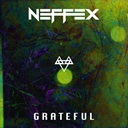

<!DOCTYPE html>
<html lang="en">
<head>
    <meta charset="utf-8" />
    <meta name="viewport" content="width=device-width, initial-scale=1" />
    <title>Lyrica.js — Sync & Extract .lrc Lyrics</title>
    <meta name="description" content="Lyrica is a lightweight, optimized JavaScript library to synchronize .lrc lyrics with HTML audio, display karaoke, and extract timing/metadata." />
    <meta name="robots" content="index,follow"/>
    <meta name="theme-color" content="#0ea5e9"/>

    <meta property="og:type" content="website"/>
    <meta property="og:site_name" content="Lyrica.js"/>
    <meta property="og:title" content="Lyrica.js — Sync & Extract .lrc Lyrics"/>
    <meta property="og:description" content="Sync lyrics in real time, highlight karaoke segments, or extract .lrc timing/metadata for custom UIs."/>
    <meta property="og:url" content="https://mahan-ameri.github.io/lyrica.js/"/>

    <link rel="stylesheet" href="styles.css">
    <script src="./res/Lyrica.umd.js"></script>
</head>
<body>
    <section>
        <div class="triple console">
            <span class="const"><p id="a">const</p><p id="f"> example1</p><p style="color: #D4D4D4;"> =</p><p id="a"> new</p><p id="b"> Lyrica</p><p id="g">(</p><p style="color: #D4D4D4;">...</p><p id="g">)</p><p style="color: #D4D4D4;">;</p></span>
            <div class="function-board">
                <span onclick="fgc()"><p id="a">example1</p><p id="b">.getCurrent</p><p id="c">()</p></span>
                <span onclick="fst()"><p id="a">example1</p><p id="b">.searchTime</p><p id="c">(</p><p id="e">" I'm grateful, oh yeah"</p><p id="c">)</p></span>
                <span onclick="fgd()"><p id="a">example1</p><p id="b">.getData</p><p id="c">()</p></span>
                <span onclick="fsl()"><p id="a">example1</p><p id="b">.searchLyric</p><p id="c">(</p><p id="e">"00:58.00"</p><p id="b">, </p><p id="a">false</p><p id="b">, </p><p id="a">true</p><p id="c">)</p></span>
                <span onclick="fgti()"><p id="a">example1</p><p id="b">.goTo</p><p id="c">(</p><p id="a">{</p><p id="f">index: </p><p id="b">12</p><p id="a">}</p><p id="c">)</p></span>
                <span onclick="fgtl()"><p id="a">example1</p><p id="b">.goTo</p><p id="c">(</p><p id="a">{</p><p id="f">lyric: </p><p id="g">[</p><p id="e">" Only a path"</p><p id="b">, </p><p id="b">1</p><p id="g">]</p><p id="a">}</p><p id="c">)</p></span>
                <span onclick="fgtt()"><p id="a">example1</p><p id="b">.goTo</p><p id="c">(</p><p id="a">{</p><p id="f">time: </p><p id="b">65000</p><p id="a">}</p><p id="c">)</p></span>
                <span onclick="fnx()"><p id="a">example1</p><p id="b">.next</p><p id="c">(</p><p id="b">3</p><p id="c">)</p></span>
                <span onclick="fpr()"><p id="a">example1</p><p id="b">.pervious</p><p id="c">(</p><p id="b">2</p><p id="c">)</p></span>
            </div>
            <span id="tip"><p id="icon">!</p><p id="text">This a fake preview, open inspect for real log.</p></span>
            <div class="cmd-board">
                <span>$> </span>
            </div>
        </div>
        <div class="triple audio">
            <div class="controls">
                <div class="song-info">
                    <span class="cover">
                        
                    </span>
                    <span class="info">
                        <p class="title">Grateful</p>
                        <p class="artist">by NEFFEX | single</p>
                    </span>
                    <a href="https://open.spotify.com/track/1e6aAbWR0MXCNcr4yQovNr" class="link">
                        
                    </a>
                </div>
                <audio src="./res/Grateful_NEFFEX.mp3" id="example_audio" controls></audio>
                <div class="control-options">
                    <span onclick="prev()"><p class="icon"><</p><p class="tag">prev</p></span>
                    <span onclick="next()"><p class="tag">next</p><p class="icon">></p></span>
                    <span onclick="last()"><p class="icon"><></p><p class="tag">last</p></span>
                    <p class="name">#example1</p>
                </div>
            </div>
            <div class="overlay">
                <div class="toggle-karaoke" onclick="openKa()">
                    <p>Advanced</p>
                </div>
                <div class="raw-text" onclick="openRaw('audio')">
                    <p>Raw</p>
                </div>
            </div>
            <div class="raw-text-conta">
                <pre id="one">[ti: Grateful]
[ar: NEFFEX]
[al: single]
[by: lrclib.net]
[offset: 5000]

[00:11.58] Always do it on my own
[00:13.14] So I gotta get through it
[00:14.68] And the only thing I know
[00:16.34] Is to love what I'm doing
[00:17.94] Never give up, never slow
[00:19.59] Till I finally prove it
[00:21.09] Never listen to the no's
[00:22.75] I just wanna keep moving
[00:24.24] Keep my head up when I act
[00:26.11] Head up, that's a fact
[00:27.73] Never looking back
[00:29.16] I'ma keep myself on track
[00:30.75] Keep my head up, staying strong
[00:32.55] Always moving on
[00:34.00] Feel I don't belong
[00:35.46] Tell my thoughts to move along
[00:37.00] Push myself to be the best
[00:38.89] Die with no regrets
[00:40.47] Live with every breath
[00:41.88] See my message start to spread
[00:43.47] And I have so many dreams
[00:45.22] Then you hit your teens
[00:46.72] Life ain't really what it seems
[00:48.27] Try to find out what it means
[00:49.96] Always do it on my own
[00:51.44] So I gotta get through it
[00:53.06] And the only thing I know
[00:54.61] Is to love what I'm doing
[00:56.26] Never give up, never slow
[00:57.78] Till I finally prove it
[00:59.46] Never listen to the no's
[01:01.05] I just wanna keep moving
[01:02.63] Yeah, I put out all this art
[01:04.24] It's my only medicine, yeah
[01:06.10] Everything I do
[01:07.59] I'm just being genuine, yeah
[01:09.44] I'm sick of being screwed
[01:10.89] Feel my own adrenaline, yeah
[01:12.63] I do just what I do
[01:13.98] And I hope you let me in, let me in, yeah
[01:17.92] 
[01:28.81] I'm grateful, oh yeah
[01:30.56] Able, oh yeah
[01:32.05] I'm stable, oh yeah
[01:33.66] No label, oh yeah
[01:35.22] You know me, I have
[01:36.95] Only a path
[01:38.63] I'm lonely, but damn
[01:40.22] I'm going to win, yeah
[01:41.74] I don't want no fake love
[01:42.80] I want the real stuff
[01:44.40] Everybody listen up
[01:45.91] 'Cause I'll only say it once
[01:47.62] I'm gon' show you all the path
[01:49.33] If you want it bad
[01:50.89] I'm gon' show you where it's at, yeah
[01:52.58] How you can get it back, yeah
[01:54.17] 'Cause I ain't never done
[01:55.85] I'll be number one
[01:57.40] Working hella hard
[01:58.73] Until I get just what I want, yeah
[02:00.74] Rise just like the sun, yeah
[02:02.46] Fatal like a gun
[02:03.89] Shooters gonna shoot
[02:05.18] And I'm gon' shoot until I've won, yeah
[02:06.90] Always do it on my own
[02:08.49] So I gotta get through it
[02:09.96] And the only thing I know
[02:11.54] Is to love what I'm doing
[02:13.20] Never give up, never slow
[02:14.79] Till I finally prove it
[02:16.23] Never listen to the no's
[02:17.90] I just wanna keep moving
[02:19.56] Yeah, I put out all this art
[02:21.19] It's my only medicine, yeah
[02:23.07] Everything I do
[02:24.39] I'm just being genuine, yeah
[02:26.14] I'm sick of being screwed
[02:27.60] Feel my own adrenaline, yeah
[02:29.42] I do just what I do
[02:30.89] And I hope you let me in, let me in, yeah
[02:34.89] 
[02:45.81] I'm grateful, oh yeah
[02:47.42] Able, oh yeah
[02:49.00] I'm stable, oh yeah
[02:50.63] No label, oh yeah
[02:52.25] You know me, I have
[02:53.80] Only a path
[02:55.42] I'm lonely, but damn
[02:57.02] I'm going to win, yeah
[02:58.57] 
                </pre>
                <pre id="two">
[by: Generated using LySy]
[00:11.544]v2:<00:11.544>Always <00:11.775>do <00:12.091>it <00:12.279>on <00:12.459>my <00:12.808>own<00:13.030>
[00:13.386]v2:<00:13.386>So <00:13.561>I <00:13.745>gotta <00:13.944>get <00:14.115>through <00:14.297>it<00:14.708>
[00:14.924]v2:<00:14.924>And <00:15.100>the <00:15.298>only <00:15.565>thing <00:15.808>I <00:16.129>know<00:16.354>
[00:16.641]v2:<00:16.641>Is <00:16.924>to <00:17.127>love <00:17.304>what <00:17.493>I'm <00:17.652>doing<00:17.884>
[00:18.240]v2:<00:18.240>Never <00:18.445>give <00:18.633>up, <00:18.935>never <00:19.134>slow<00:19.579>
[00:19.809]v2:<00:19.809>Till <00:20.026>I <00:20.241>finally <00:20.490>prove <00:20.673>it<00:21.207>
[00:21.481]v2:<00:21.481>Never <00:21.706>listen <00:21.926>to <00:22.145>the <00:22.514>no's<00:22.817>
[00:22.676]v2:<00:22.676>I <00:23.076>just <00:23.251>wanna <00:23.448>keep <00:23.678>moving<00:24.056>
[00:24.566]v2:<00:24.566>Keep <00:24.731>my <00:24.913>head <00:25.098>up <00:25.277>when <00:25.484>I <00:25.764>act<00:25.968>
[00:26.521]v2:<00:26.521>Head <00:26.690>up, <00:27.004>that's <00:27.186>a <00:27.332>fact<00:27.867>
[00:28.247]v2:<00:28.247>Never <00:28.420>looking <00:28.632>back<00:29.266>
[00:29.496]v2:<00:29.496>I'ma <00:29.770>keep <00:29.987>myself <00:30.164>on <00:30.491>track<00:30.755>
[00:30.995]v2:<00:30.995>Keep <00:31.144>my <00:31.296>head <00:31.445>up, <00:31.607>staying <00:31.898>strong<00:32.562>
[00:32.959]v2:<00:32.959>Always <00:33.138>moving <00:33.609>on<00:34.117>
[00:34.525]v2:<00:34.525>Feel <00:34.725>I <00:34.923>don't <00:35.159>belong<00:35.345>
[00:35.732]v2:<00:35.732>Tell <00:35.873>my <00:36.040>thoughts <00:36.241>to <00:36.482>move <00:36.760>along<00:37.192>
[00:37.228]v2:<00:37.228>Push <00:37.415>myself <00:37.614>to <00:37.902>be <00:38.259>the <00:38.445>best<00:38.812>
[00:39.338]v2:<00:39.338>Die <00:39.522>with <00:39.702>no <00:39.899>regrets<00:40.258>
[00:40.834]v2:<00:40.834>Live <00:41.038>with <00:41.238>every <00:41.442>breath<00:41.820>
[00:42.224]v2:<00:42.224>See <00:42.445>my <00:42.678>message <00:42.865>start <00:43.095>to <00:43.355>spread<00:43.555>
[00:43.815]v2:<00:43.815>And <00:44.045>I <00:44.255>have <00:44.456>so <00:44.651>many <00:44.932>dreams<00:45.348>
[00:45.365]v2:<00:45.365>Then <00:45.731>you <00:45.922>hit <00:46.168>your <00:46.377>teens<00:46.806>
[00:47.069]v2:<00:47.069>Life <00:47.250>ain't <00:47.438>really <00:47.597>what <00:47.780>it <00:47.937>seems<00:48.076>
[00:48.528]v2:<00:48.528>Try <00:48.704>to <00:48.878>find <00:49.055>out <00:49.245>what <00:49.417>it <00:49.592>means<00:49.842>
[00:50.327]v2:<00:50.327>Always <00:50.550>do <00:50.778>it <00:51.028>on <00:51.236>my <00:51.431>own<00:51.618>
[00:51.844]v2:<00:51.844>So <00:52.044>I <00:52.259>gotta <00:52.457>get <00:52.634>through <00:52.833>it<00:53.339>
[00:53.563]v2:<00:53.563>And <00:53.766>the <00:53.971>only <00:54.169>thing <00:54.366>I <00:54.548>know<00:54.875>
[00:55.105]v2:<00:55.105>Is <00:55.301>to <00:55.510>love <00:55.700>what <00:55.878>I'm <00:56.035>doing<00:56.334>
[00:56.615]v2:<00:56.615>Never <00:56.811>give <00:57.007>up, <00:57.183>never <00:57.609>slow<00:57.972>
[00:58.213]v2:<00:58.213>Till <00:58.414>I <00:58.624>finally <00:58.823>prove <00:59.006>it<00:59.621>
[00:59.854]v2:<00:59.854>Never <01:00.089>listen <01:00.289>to <01:00.489>the <01:00.959>no's<01:01.325>
[01:01.515]v2:<01:01.515>I <01:01.709>just <01:01.886>wanna <01:02.050>keep <01:02.225>moving<01:02.724>
[01:03.012]v2:<01:03.012>Yeah, <01:03.229>I <01:03.451>put <01:03.660>out <01:03.849>all <01:04.065>this <01:04.238>art<01:04.589>
[01:04.708]v2:<01:04.708>It's <01:04.894>my <01:05.062>only <01:05.394>medicine, <01:06.026>yeah<01:06.523>
[01:06.560]v2:<01:06.560>Everything <01:06.740>I <01:07.261>do<01:07.714>
[01:07.752]v2:<01:07.752>I'm <01:07.923>just <01:08.133>being <01:08.627>genuine, <01:09.376>yeah<01:09.838>
[01:09.650]v2:<01:09.650>I'm <01:09.799>sick <01:09.962>of <01:10.119>being <01:10.288>screwed<01:10.812>
[01:10.919]v2:<01:10.919>Feel <01:11.106>my <01:11.281>own <01:11.495>adrenaline, <01:12.269>yeah<01:12.939>
[01:12.703]v2:<01:12.703>I <01:12.863>do <01:13.021>just <01:13.196>what <01:13.365>I <01:13.707>do<01:13.974>
[01:14.211]v2:<01:14.211>And <01:14.394>I <01:14.591>hope <01:14.781>you <01:14.969>let <01:15.163>me <01:15.412>in, <01:15.798>let <01:15.951>me <01:16.145>in, <01:16.417>yeah<01:22.624>
[01:29.201]v2:<01:29.201>I'm <01:29.361>grateful, <01:30.035>oh <01:30.205>yeah<01:30.412>
[01:30.638]v2:<01:30.638>Able, <01:31.653>oh <01:31.832>yeah<01:32.308>
[01:32.811]v2:<01:32.811>I'm <01:32.973>stable, <01:33.697>oh <01:33.855>yeah<01:34.010>
[01:34.318]v2:<01:34.318>No <01:34.491>label, <01:35.215>oh <01:35.395>yeah<01:35.738>
[01:35.913]v2:<01:35.913>You <01:36.106>know <01:36.307>me, <01:36.881>I <01:37.063>have<01:37.464>
[01:37.496]v2:<01:37.496>Only <01:38.358>a <01:38.572>path<01:39.008>
[01:39.135]v2:<01:39.135>I'm <01:39.294>lonely, <01:40.027>but <01:40.204>damn<01:40.692>
[01:40.878]v2:<01:40.878>I'm <01:41.065>going <01:41.754>to <01:41.919>win, <01:42.428>yeah<01:42.752>
[01:43.621]v2:<01:43.621>I <01:43.804>want <01:44.014>the <01:44.231>real <01:44.419>stuff<01:44.766>
[01:44.927]v2:<01:44.927>Everybody <01:45.705>listen <01:45.981>up<01:46.478>
[01:46.665]v2:<01:46.665>'Cause <01:46.867>I'll <01:47.078>only <01:47.281>say <01:47.670>it <01:47.841>once<01:48.177>
[01:48.385]v2:<01:48.385>I'm <01:48.594>gon' <01:48.778>show <01:48.969>you <01:49.131>all <01:49.307>the <01:49.470>path<01:49.859>
[01:50.218]v2:<01:50.218>If <01:50.411>you <01:50.605>want <01:50.794>it <01:50.990>bad<01:51.427>
[01:51.375]v2:<01:51.375>I'm <01:51.540>gon' <01:51.701>show <01:51.854>you <01:51.998>where <01:52.242>it's <01:52.429>at, <01:52.598>yeah<01:52.934>
[01:53.149]v2:<01:53.149>How <01:53.338>you <01:53.522>can <01:53.695>get <01:53.874>it <01:54.068>back, <01:54.374>yeah<01:54.615>
[01:54.817]v2:<01:54.817>'Cause <01:54.982>I <01:55.180>ain't <01:55.365>never <01:55.669>done<01:56.183>
[01:56.539]v2:<01:56.539>I'll <01:56.706>be <01:56.888>number <01:57.264>one<01:57.722>
[01:57.918]v2:<01:57.918>Working <01:58.288>hella <01:58.848>hard<01:59.192>
[01:59.422]v2:<01:59.422>Until <01:59.602>I <01:59.786>get <01:59.963>just <02:00.143>what <02:00.315>I <02:00.483>want, <02:00.635>yeah<02:01.178>
[02:01.414]v2:<02:01.414>Rise <02:01.618>just <02:01.832>like <02:02.028>the <02:02.227>sun, <02:02.406>yeah<02:02.852>
[02:03.051]v2:<02:03.051>Fatal <02:03.252>like <02:03.503>a <02:03.904>gun<02:04.183>
[02:04.610]v2:<02:04.610>Shooters <02:04.804>gonna <02:05.363>shoot<02:05.760>
[02:05.941]v2:<02:05.941>And <02:06.130>I'm <02:06.310>gon' <02:06.498>shoot <02:06.669>until <02:06.832>I've <02:07.001>won, <02:07.150>yeah<02:07.406>
[02:07.387]v2:<02:07.387>Always <02:07.571>do <02:07.784>it <02:07.989>on <02:08.366>my <02:08.616>own<02:08.963>
[02:09.174]v2:<02:09.174>So <02:09.371>I <02:09.542>gotta <02:09.704>get <02:09.887>through <02:10.058>it<02:10.217>
[02:10.673]v2:<02:10.673>And <02:10.873>the <02:11.105>only <02:11.312>thing <02:11.495>I <02:11.855>know<02:12.040>
[02:12.267]v2:<02:12.267>Is <02:12.528>to <02:12.740>love <02:12.926>what <02:13.108>I'm <02:13.255>doing<02:13.580>
[02:13.877]v2:<02:13.877>Never <02:14.084>give <02:14.318>up, <02:14.522>never <02:14.900>slow<02:15.331>
[02:15.515]v2:<02:15.515>Till <02:15.716>I <02:15.885>finally <02:16.084>prove <02:16.504>it<02:16.999>
[02:17.196]v2:<02:17.196>Never <02:17.397>listen <02:17.605>to <02:17.802>the <02:18.138>no's<02:18.531>
[02:18.731]v2:<02:18.731>I <02:18.932>just <02:19.117>wanna <02:19.315>keep <02:19.503>moving<02:19.888>
[02:20.228]v2:<02:20.228>Yeah, <02:20.438>I <02:20.659>put <02:20.868>out <02:21.076>all <02:21.324>this <02:21.626>art<02:22.039>
[02:22.248]v2:<02:22.248>It's <02:22.455>my <02:22.659>only <02:22.852>medicine, <02:23.037>yeah<02:23.456>
[02:23.757]v2:<02:23.757>Everything <02:23.991>I <02:24.418>do<02:24.792>
[02:24.853]v2:<02:24.853>I'm <02:25.047>just <02:25.250>being <02:25.402>genuine, <02:26.119>yeah<02:26.812>
[02:26.845]v2:<02:26.845>I'm <02:26.999>sick <02:27.156>of <02:27.325>being <02:27.496>screwed<02:27.660>
[02:28.088]v2:<02:28.088>Feel <02:28.288>my <02:28.478>own <02:28.669>adrenaline, <02:29.575>yeah<02:30.113>
[02:29.996]v2:<02:29.996>I <02:30.169>do <02:30.330>just <02:30.516>what <02:30.680>I <02:30.830>do<02:30.979>
[02:31.373]v2:<02:31.373>And <02:31.550>I <02:31.720>hope <02:31.885>you <02:32.059>let <02:32.244>me <02:32.526>in, <02:32.939>let <02:33.123>me <02:33.290>in, <02:33.707>yeah<02:39.776>
[02:46.276]v2:<02:46.276>I'm <02:46.469>grateful, <02:47.154>oh <02:47.336>yeah<02:47.711>
[02:47.896]v2:<02:47.896>Able, <02:48.640>oh <02:48.836>yeah<02:49.247>
[02:49.661]v2:<02:49.661>I'm <02:49.836>stable, <02:50.358>oh <02:50.553>yeah<02:50.942>
[02:50.914]v2:<02:50.914>No <02:51.140>label, <02:51.923>oh <02:52.122>yeah<02:52.319>
[02:52.905]v2:<02:52.905>You <02:53.061>know <02:53.218>me, <02:53.749>I <02:53.929>have<02:54.296>
[02:54.594]v2:<02:54.594>Only <02:55.335>a <02:55.497>path<02:55.865>
[02:56.118]v2:<02:56.118>I'm <02:56.313>lonely, <02:56.897>but <02:57.101>damn<02:57.299>
[02:57.670]v2:<02:57.670>I'm <02:57.827>going <02:58.468>to <02:58.627>win, <02:59.342>yeah<NaN:000NaN>

                </pre>
            </div>
            <div class="toggle-karaoke-conta">
                <div class="lyrica-karaoke-container"></div>
            </div>
            <div class="lyrica-container"></div>
        </div>
        <div class="triple static">
            <div class="top">
                <div class="intro">
                    <div class="song-info">
                        <span class="cover">
                            
                        </span>
                        <span class="info">
                            <p class="title">From</p>
                            <p class="artist">by Aemia | single</p>
                        </span>
                        <a href="https://open.spotify.com/track/1VjL8Nq6p15RGOUtdJvSsa" class="link">
                            
                        </a>
                    </div>
                    <span id="tip"><p id="icon">!</p><p id="text">This method renders extracted lyrics from file.</p></span>
                </div>
                <div class="overlay">
                    <div class="raw-text" onclick="openRaw('static')">
                        <p>Raw</p>
                    </div>
                </div>
                <div class="raw-text-conta">
                    <pre>[by: Generated using LySy]
[00:00.555]
[00:16.578]<00:16.578>Take <00:16.876>me <00:17.128>out <00:17.496>again<00:18.083>
[00:18.489]<00:18.489>Fill <00:18.679>me <00:18.882>up <00:19.145>with <00:19.385>hope<00:20.091>
[00:20.493]<00:20.493>Put <00:20.673>me <00:20.866>on <00:21.045>the <00:21.224>edge <00:21.421>and <00:21.621>let <00:21.937>me <00:22.189>fly <00:22.387>down <00:22.945>on <00:23.275>my <00:23.708>own<00:26.128>
[00:26.787]<00:26.787>Want <00:27.218>to<00:27.878>
[00:28.395]<00:28.395>Feel <00:28.862>like <00:29.079>I'm <00:29.523>in <00:29.943>control<00:30.386>
[00:30.958]<00:30.958>And <00:31.245>I <00:31.905>know<00:34.036>
[00:34.756]<00:34.756>Life's <00:35.169>too <00:36.042>short <00:36.773>to <00:37.202>even <00:37.527>care <00:37.969>at <00:38.465>all<00:39.128>
[00:40.563]<00:40.563>Half <00:40.827>the <00:41.049>people <00:41.269>in <00:41.494>this <00:41.975>town <00:42.545>are <00:42.905>already <00:43.113>dead<00:43.556>
[00:44.311]<00:44.311>They <00:44.486>won't <00:45.070>give <00:45.438>a <00:45.723>damn <00:45.945>if <00:46.144>we <00:46.641>stay <00:46.808>or <00:47.033>if <00:47.422>we <00:47.773>don't<00:50.136>
[00:50.961]<00:50.961>This <00:51.425>could <00:52.441>all <00:52.767>end <00:53.448>tomorrow<00:54.124>
[00:54.797]<00:54.797>And <00:55.015>we <00:55.223>don't <00:55.718>own <00:58.741>this <00:59.180>place<00:59.822>
[01:00.431]<01:00.431>Take <01:00.622>me <01:00.836>back <01:01.016>to <01:01.505>where <01:02.016>I'm <01:02.493>from<01:38.551>
[01:40.462]<01:40.462>Time <01:41.400>plays<01:41.842>
[01:42.493]<01:42.493>This <01:43.373>game<01:43.786>
[01:44.273]<01:44.273>Stays <01:45.145>still<01:45.945>
[01:46.248]<01:46.248>All <01:47.383>day<01:47.888>
[01:48.396]<01:48.396>I'll <01:49.190>find<01:50.134>
[01:50.390]<01:50.390>Some <01:51.396>way<01:51.826>
[01:52.363]<01:52.363>Some <01:53.308>day<01:53.862>
[01:54.587]<01:54.587>If <01:55.364>you <01:56.469>go<01:57.903>
[01:58.979]<01:58.979>This <01:59.428>would <02:00.286>all <02:00.781>end <02:01.318>tomorrow<02:02.328>
[02:02.823]<02:02.823>And <02:03.034>we <02:03.253>don't <02:03.727>own <02:06.736>this <02:07.143>place<02:07.872>
[02:08.384]<02:08.384>Take <02:08.588>me <02:08.810>back <02:09.445>to <02:09.615>wherе <02:10.065>I'm <02:10.522>from<02:11.461>
[02:11.901]<02:11.901>When <02:12.251>I <02:12.440>look <02:12.773>around<02:13.160>
[02:13.599]<02:13.599>Nothing <02:13.887>but <02:14.274>a <02:14.558>cloud<02:14.965>
[02:15.256]<02:15.256>I <02:15.463>don't <02:15.672>wanna <02:15.851>die<02:16.242>
[02:16.567]<02:16.567>Bring <02:16.808>me <02:17.032>back <02:17.250>to <02:17.589>life<02:17.976>
[02:17.764]<02:17.764>Let <02:18.106>me <02:18.313>see <02:18.512>the <02:18.707>light <02:19.484>One <02:19.675>more <02:19.930>time<02:21.194>
[02:23.506]<02:23.506>One <02:23.734>more <02:24.080>time<02:27.530>
[02:28.024]<02:28.024>When <02:28.227>I <02:28.435>look <02:28.643>around<02:29.119>
[02:29.567]<02:29.567>Nothing <02:29.852>but <02:30.084>a <02:30.401>cloud<02:30.945>
[02:30.761]<02:30.761>I <02:31.116>don't <02:31.556>wanna <02:31.992>die<02:32.413>
[02:32.519]<02:32.519>Bring <02:32.718>me <02:32.941>back <02:33.120>to <02:33.314>life<02:33.860>
[02:33.968]<02:33.968>Let <02:34.296>me <02:34.503>see <02:34.710>the <02:35.091>light <02:35.539>One <02:35.870>more <02:36.126>time<02:36.610>
[02:39.593]<02:39.593>One <02:39.805>more <02:40.023>time</pre>
                </div>
                <div id="lyrica-container2">
                    <span id="load"><p>Load Lyric</p></span>
                </div>
            </div>
            <div class="bottom">
                <a href="https://github.com/mahan-ameri/lyrica.js" class="cards github">
                    
                    <p>mahan-ameri/Lyrica.js</p>
                </a>
                <a href="https://www.npmjs.com/package/lyrica" class="cards npm">
                    
                    <p>/package/lyrica</p>
                </a>
                <div class="icons"></div>
            </div>
        </div>
    </section>
</body>
    <script type="module">
        const example = new Lyrica("./res/Grateful_NEFFEX.lrc", {
            audio_selector: "#example_audio",
            type: "sync",
            offset: 200,
            container_selector: ".lyrica-container",
            animations: {
                animation_type: "slide",
                auto_scroll: true
            }
        });

        document.getElementById("load").addEventListener("click" ,()=>{
            document.getElementById("load").remove();
            const print = new Lyrica("./res/From_Aemia.lrc", {
                type: "print",
                isKaraoke: true,
                actKaraoke: false,
                container_selector: "#lyrica-container2"
            })
        })

        window.next = function() {
            example.next()
        }
        window.prev = function() {
            example.previous()
        }
        window.last = function() {
            example.last()
        }

        window.fst = function() {
            let text = example.searchTime(" I'm grateful, oh yeah");
            console.log(text);
            addToConsole(`[[${text[0]}]`)
        }
        window.fsl = function() {
            let text = example.searchLyric("00:58.00", false, true);
            console.log(text);
            addToConsole(`["${text[0]}", ${text[1]}]`)
        }
        window.fgd = function() {
            let text = example.getData()
            console.log(text)
            addToConsole(`{lyric: (${text.lyrics.length})[...], metadata: {...}, times: (${text.times.length})[...]}`)
        }
        window.fgc = function() {
            let text = example.getCurrent();
            if (text) {
                addToConsole(`["${text[0]}", ${text[1]}, ${text[2]}]`) 
            }else {
                addToConsole(text)
            }
            console.log(text)
        }
        window.fgti = function() {
            let text = example.goTo({index: 12})
            console.log(text)
            addToConsole(`["${text[0]}", ${text[1]}, ${text[2]}]`)
        }
        window.fgtl = function() {
            let text = example.goTo({lyric: [" Only a path", 1]});
            console.log(text)
            if (text !== undefined) {
                addToConsole(`["${text[0]}", ${text[1]}, ${text[2]}]`)
            }else {
                addToConsole(text)
            }
            
        }
        window.fgtt = function() {
            let text = example.goTo({time: 65000})
            console.log(text)
            addToConsole(`["${text[0]}", ${text[1]}, ${text[2]}]`)
        }
        window.fnx = function() {
            let text = example.next(3)
            console.log(text)
            if (text !== undefined) {
                addToConsole(`["${text[0]}", ${text[1]}, ${text[2]}]`)
            }else {
                addToConsole(text)
            }
        }
        window.fpr = function() {
            let text = example.previous(2)
            console.log(text)
            if (text !== undefined) {
                addToConsole(`["${text[0]}", ${text[1]}, ${text[2]}]`)
            }else {
                addToConsole(text)
            }
            
        }

        function addToConsole(what) {
            const consoleC = document.querySelector(".cmd-board");
            const el = document.createElement("span");
            el.textContent = `$> ${what}`;
            consoleC.appendChild(el)
            consoleC.scrollTo({
                top: 1000000
            })
        }

        window.openRaw = function(sel) {
            document.querySelector(`.${sel} .raw-text`).classList.toggle('active');
            document.querySelector(`.${sel} .raw-text-conta`).classList.toggle('active');
            if (sel === 'audio') {
                const ka = document.querySelector('.audio .toggle-karaoke');
                if (ka) {
                    ka.classList.toggle('hidden')
                }
            }
        }
        let first = false, exampleKaraoke;
        const audio = document.getElementById('example_audio')
        function fireKa() {
            if (!first) {
                first = true;
                let playing = true;
                if (audio.paused) {
                    playing = false
                }
                audio.pause()
                exampleKaraoke = new Lyrica("./res/Grateful_NEFFEX_Karaoke.lrc", {
                    audio_selector: "#example_audio",
                    type: "sync",
                    offset: 200,
                    isKaraoke: true,
                    actKaraoke: true,
                    container_selector: ".lyrica-karaoke-container",
                    animations: {
                        animation_type: "slide",
                        auto_scroll: true
                    }  
                });
                setTimeout(()=>{
                    exampleKaraoke.start()
                }, 500)
                if (playing) {
                    setTimeout(()=>{
                        audio.play();
                    }, 500)
                }
        }
            
        }
        window.openKa = function() {
            document.querySelector('.audio .toggle-karaoke').classList.toggle('activ');
            document.querySelector('.audio .raw-text-conta').classList.toggle('karaoke');
            const active = document.querySelector('.audio .activ');
            const container = document.querySelector('.audio .toggle-karaoke-conta');
            const audioS = audio.paused

            if (active) {
                container.style.display = 'block';
                if (first) {
                    exampleKaraoke.start();
                }
                example.pause()
                fireKa()
            }else {
                container.style.display = 'none';
                exampleKaraoke.pause();
                example.start();
            }
        }
    </script> 
</html>
